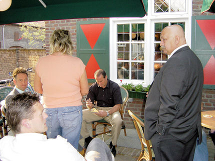
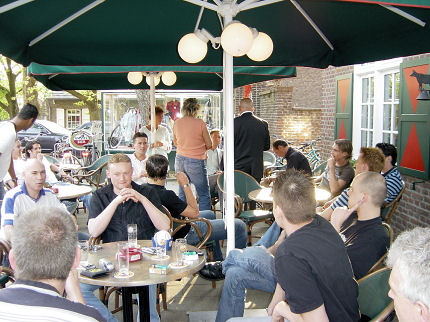
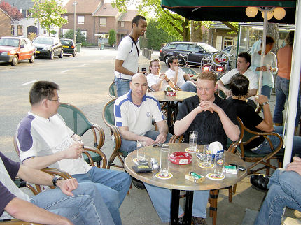
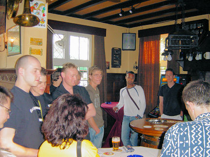
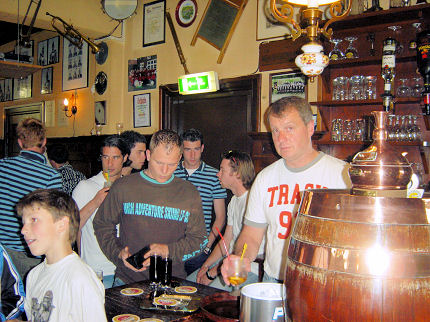
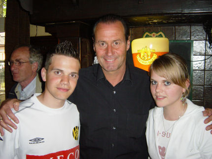
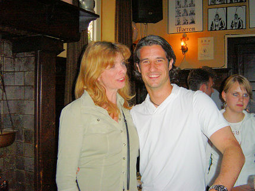

|
Roda info-avond Merum-Herten
|

Zowel in Merum-Herten als in Bocholtz werd een info-avond gehouden voor
regionale Roda-suporterskernen.
In Merum-Herten zaten Huub Narinx, Huub Stevens en Ruud Hesp al op
het zonnige terras toen de meeste supporters nog moesten komen.

Rodafans uit Helden, Herten, Posterholt, Maasbracht, Roermond evenals
Skippy & brother
schoven aan.

Er kwamen meer dan de zes aangezegde spelers:
Roy Bejas, Humphrey Rudge, Olaf Rompelberg, Kevin Begois, Ken Leemans,
Jan Paul Saeijs, Gregoor van Dijk, Simon Cziommer en Jerome Colinet.

In het café-gedeelte groepeerden de aanwezigen zich rond de steh-tische.

Veel kinderen (en volwassenen) gingen op handtekeningenjacht.

En natuurlijk op foto-safari.

Huub Stevens parreerde in zijn rede meteen eventuele vragen omtrent het
al dan niet vertrekken van Cziommer: "Simon Cziommer beslist zelf waar
en wanneer hij gaat, punt."
Stevens verhaalde over zijn trainersperikelen en roemde de tweede helft van
het seizoen waar twee maal net succes werd gemist:
Tegen Ajax en tegen
Heerenveen. Het grote probleem bij Roda is dat er geen fundament ligt. Dat
fundament was er destijds wel met De Kock, Peeters en Van der Luer. Een
dergelijk fundament komt komend seizoen weer terug met de nieuwe
aanwinsten die volgens Stevens zeer goed zijn. Ook roemde de trainer de
ontwikkeling van Cissé, Bodor en Lachambre. In het vragenuurtje en
tijdens het informele na-kletsen zei Huub dat er een
aanvaller bij moet komen, een afmaker. Maar dan moet
er eerst een speler
weg. De financiële positie van Roda is slecht. Dit werd bevestigd door Henk
Maasen, commissaris technische Zaken. Deze multimiljonair bepaalt voor
een groot gedeelte welke spelers er door Roda worden aangetrokken.
Zowel Huub Narinx als Huub Stevens roemden de
Koempel-mentaliteit. Deze
moet leidraad worden bij het voetbal van Roda. Inzet en knokken voor elkaar.
Men streeft naar 18.500 toeschouwers en wil dit onder meer bereiken door
te werken met supporters-cellen. Dat houdt globaal in dat elke groep
supporters mensen in de eigen omgeving enthousiasmeert. In de toekomst zullen
meer van deze avonden gehouden worden. Dit zal de
reguliere forumavonden niet verdringen.
© Koempels Pleasure Dome
|